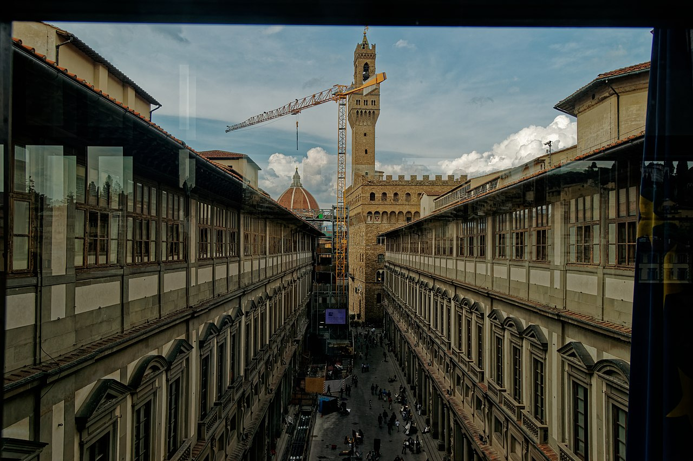
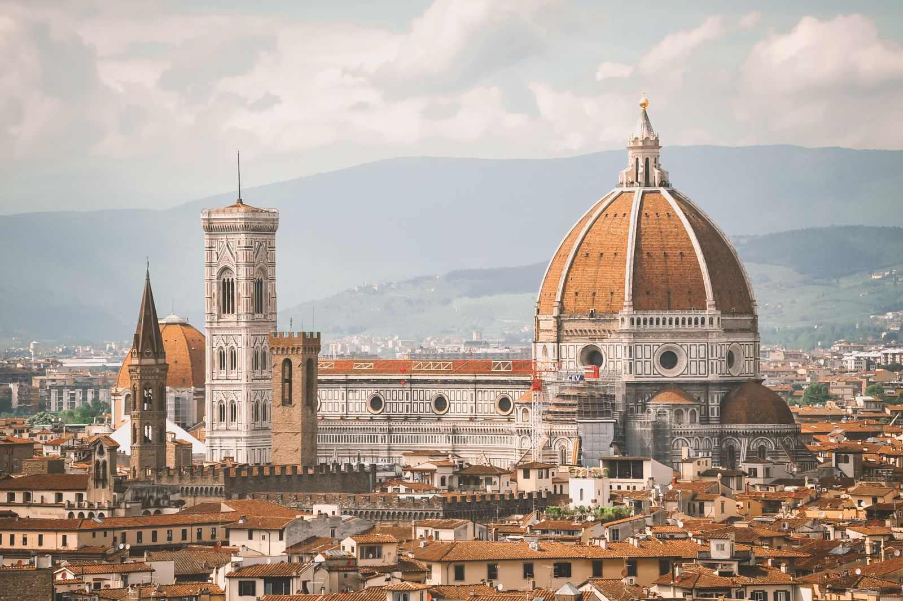

Lume Arno
Explore the city
Art, streets, and views—three ways to spend your days without rushing the map.
Rooms of art
Where the light finds the work
Start with a few essential rooms, then leave space for an unexpected chapel or courtyard.

Galleries with breathing room
Book timed entry for the major collections, then keep a half-day open for Santa Croce’s quiet tombs or a small museum beyond the main squares. Arrive at opening when you can— the rooms feel larger before midday.
- Reserve tickets online for peak months
- Pair one large museum with one neighborhood church
- Leave phones down for a single room—watch how the light moves
Stone & street
Walks that stay with you
Florence is best learned at walking speed—from the riverbanks into the Oltrarno’s quieter lanes.
-
River loop at dawn
Begin near Ponte Santa Trinita, follow the Arno east, then cross and return through the markets before they fully wake. Cool air, soft façades, fewer crowds.
-
Oltrarno ateliers
South of the river, workshop doors open onto leather, paper, and wood. Peek in politely; many makers welcome a short conversation more than a hurried photograph.
-
Square to square
Link Piazza della Signoria to Santa Maria Novella with side streets instead of the busiest arteries. You’ll still find landmarks—just with more sky between them.
Hill & horizon
When you need the whole city at once
Climb for the panorama, then linger—sunsets here are a ritual, not a photo stop.

Gardens and belvederes
Piazzale Michelangelo is the classic overlook; for quieter green, aim for San Miniato or the Boboli terraces when tickets allow. Bring water, wear shoes meant for stone, and plan your descent before dark if you’re new to the hills.
How to get up and back →